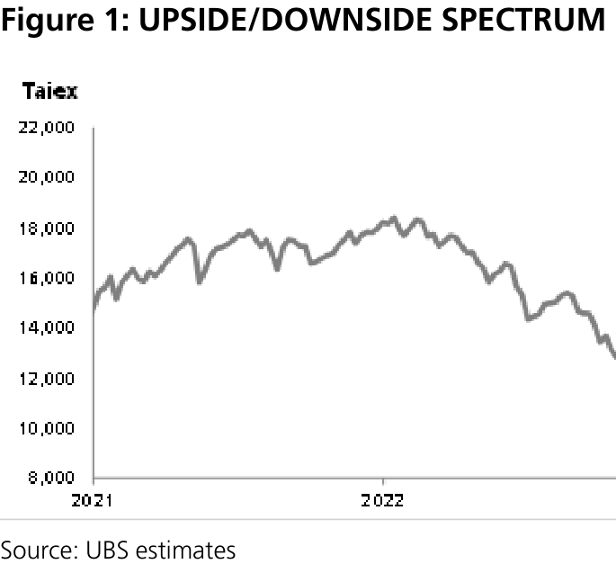
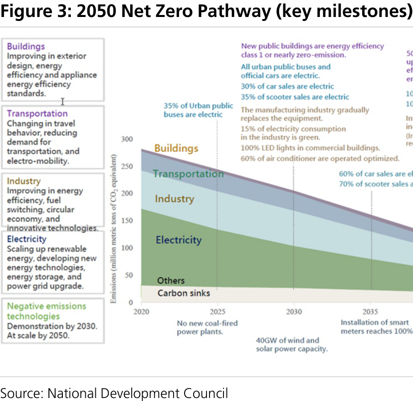
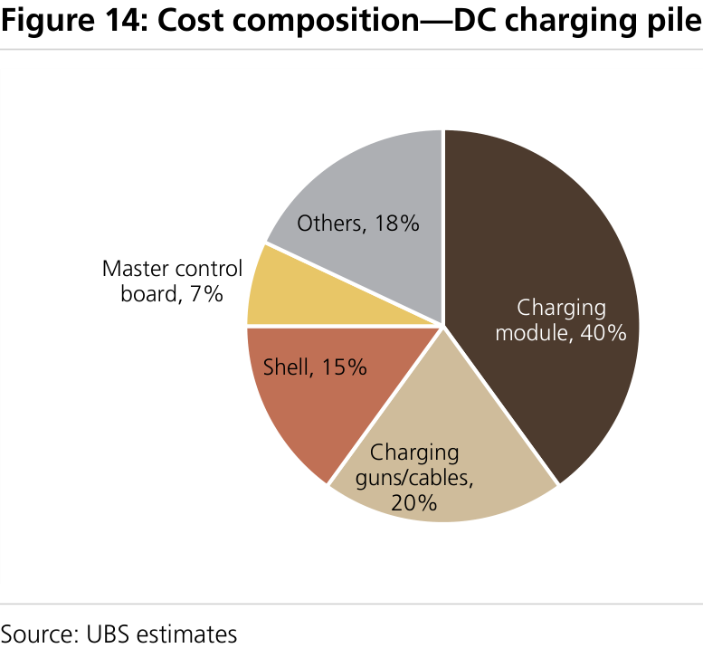

a b
Taiwan Equity Strategy Rising EV charging infrastructure capex, who benefits?
Digging into the global charging infra/battery swap station supply chain
We published a report on potential beneficiaries in the Taiwan equity market of the global energy transition trend. In this report, we delve into one of the pillars: transport electrification. UBS forecasts capex opportunities of US$152bn for charging facilities and grid upgrades in the US and Europe . The market seems more familiar with leading charging station operators and auto companies in the US/Europe. In this report, we analyse the supply chain and identify critical hardware component suppliers listed in Taiwan. The Taiwan government is accelerating its transport electrification to achieve net zero emission by 2050. We see rising capex opportunities in Taiwan and growing potential to export successful electric two-wheelers (E2W) battery swap services overseas.
EV charging stations: Taiwan manufacturers key component suppliers
The Taiwan market benefits from the transport electrification in two aspects: 1) electric vehicles have more electronic components than traditional ICE vehicles. Taiwan, home to key semiconductor and hardware suppliers, is well positioned to capture the rising trend (beneficiary list: Figure 13). 2) Charging piles contain several important components, eg: charging modules (40% of total cost), charging guns/cables (20%). Aside from chips, Taiwan suppliers have penetrated the global supply chain of all other major components: a) specialty cables/connectors: Sinbon supplies the top three charging station operators in the US. Bizlink is a cable supplier for Tesla's charging pillars; b) charging guns/facilities: Voltronic's product (both AC/DC) shipment is to start in H223. PhiHong supplies to Shell and Audi. Its new product could provide an output of up to 480kw (DC fast charging 30-360kw generally); c) charging modules, power management, and total solutions: Delta is the world's top 5 charging pillar supplier and provides on-board EV power management solutions.
E2W battery swaps: exporting to overseas markets
The Taiwan government is supportive of developing battery swap as a major E2W charging solution and offers subsidies to achieve its transport electrification goal, 100% new vehicles (both EV and E2W) sold by 2040. We expect rising capex (US$1-8bn) for charging infrastructure in Taiwan, similar to other markets. We also see growth potential in the export of battery swap services overseas, post successful operations in Taiwan. Battery swap stations could also serve as virtual power plants, helping stable/greener electricity supply for national grids.
Stock picks: most favored - Sinbon, Voltronic
We include companies that have sales exposure to the charging infrastructure and battery swapping capex opportunities (see Figure 11 and Figure 17). Although autos currently account for less than 20% of sales, we expect robust growth. Among UBS covered companies, we have Buy rating on Sinbon/Voltronic and Sell on Taiwan Cement.
Global Research and Evidence Lab
Equity Strategy
Taiwan
====================================================================================================
Taiwan Equity Strategy
UBS Research THESIS MAP
Pivotal Questions
UBS view
EVIDENCE
WHAT´S PRICED IN?
UBS Research
LEAST FAVORED
Sector Thesis Map MOST FAVORED
Sinbon, Voltronic
Taiwan Cement
Q: What is the role of Taiwan manufacturers in the transport electrification supply chain?
EVs have relatively high electronic-related components than traditional ICE vehicles. Taiwan could benefit from the rising EV trend as Taiwan has solid credentials in several key semis and hardware component manufacturing. For charging stations, aside from chips, Taiwan manufacturers have penetrated the global supply chain for key components, including charging modules and cables & charging guns.
more
Q: What are the capex opportunities from transport electrification in the Taiwan market?
We estimate a total of NT$34bn capex opportunities in EV charging infrastructure for Taiwan. There could be more upside if we consider higher EV/charging pillar ratio, electric grid upgrades, and solar power generation equipment at charging stations. But we think E2W charging capex opportunities are relatively limited after 2023. The leading companies have built widespread networks ahead of E2W rider growth. However, exports of battery swap services total solutions could bring more growth upside.
more
For H223, we identify four major positive themes in the Taiwan equity market: 1) quality dividend yield; 2) beneficiaries of rising AI application; 3) a semiconductor cyclical recovery; and 4) structural uptrend in energy transition. We are bullish about the growth potential of Taiwan stocks in the global transport electrification trend. EVs, charging infrastructure, and battery swaps all have higher electronic-related components. This area has been the core strength of Taiwan manufacturers.
UBS estimates total capex opportunities for charging infrastructure in Europe and the US to be US $152bn. Tech companies have been diversifying into the auto industry. Some have up to 20% sales mix. The Taiwan government has a detailed execution plan to achieve 100% EV by 2040. Our scenario analysis indicates capex opportunities of NT$34-254bn for EV charging infrastructure in Taiwan. Taiwan has built an extensive battery swap network (Gogoro and Kymco combined: 4,600 stations) for E2W, similar to the number of petrol stations.
EV sales mix and charging infrastructure capex opportunities account for a relatively low proportion of most Taiwan stocks. It takes time for product certification and mass production. We think the market has partially priced in possible benefits from transport electrification. We expect share prices to rise further once earnings contribution visibility becomes higher.
Figure 1: UPSIDE/DOWNSIDE SPECTRUM
====================================================================================================
Taiwan Equity Strategy
Pivotal Questions Pivotal Questions
Q: What is the role of Taiwan manufacturers in the
transport electrification supply chain?
UBS VIEW
EVs have relatively high electronic-related components than traditional ICE vehicles. Taiwan could benefit from the rising EV trend as Taiwan has solid credentials in several key semis and hardware component manufacturing. For charging stations, aside from chips, Taiwan manufacturers have penetrated the global supply chain for key components, including charging modules and cables & charging guns.
EVIDENCE
More and more Taiwan companies are disclosing their exposure to the auto industry and have a solid growth outlook. For example, Delta's has 10-15% of total sales from auto. Sinbon has 15% of total sales from autos and expects this to grow 18% in 2023. UBS estimates total capex opportunities for charging infrastructure in Europe and the US of US$152bn.
WHAT´S PRICED IN?
The sales mix from EV and charging infrastructure capex opportunities account for a relatively low proportion for most stocks. It takes a long time for product certification and mass production. We think the market has partially priced in possible benefits from transport electrification. We expect share prices to rise further once earnings contribution visibility increases.
Energy transition opportunities for Taiwan stocks
In November 2022, we published a report discussing the Taiwan government's strategies to achieve net zero carbon emissions by 2050. The Taiwan government plans total capex investment of NT$4,308bn (US$137bn) in 2022-30. The transition to green energy and phasing out of nuclear power could result in tight electricity supply in 2023- 24. Hence, the government has launched additional budget to enhance electricity supply resilience during the transition to green energies. In addition to the Taiwan market, UBS identifies capex opportunities from global energy transition of US$75-90tn through to 2050. We identify companies listed in the Taiwan market that could benefit from this rising capex trend in Figure 5.
UBS Research
Figure 2: Total capital investments from energy transition in 2022-30E—Taiwan
====================================================================================================
Figure 3: 2050 Net Zero Pathway (key milestones)
Figure 4: Near- and medium-term signposts —Taiwan market
====================================================================================================
Figure 5: Taiwan stocks potentially benefiting from global energy transition
====================================================================================================
Zooming in on transport electrification
Figure 6: CO2 emissions by sector
Figure 7: Transport CO2 emissions by mode
====================================================================================================
Charging infrastructure capex to rise along with rising EV sales
US market: charging infrastructure a US$60bn opportunity
Figure 8: UBS global EV sales model by region (light vehicles sold)
====================================================================================================
Figure 9: EV charger build out—the US
Figure 10: EV charger build out opportunity—the US
Figure 11: Key beneficiaries in global markets
====================================================================================================
Europe market: charging infrastructure a US$92bn opportunity
What's the role of Taiwan in the supply chain?
I. Electricity vehicles—semis and hardware
Figure 12: Investments in charging infrastructure in Europe
====================================================================================================
II. Charging infrastructure
Figure 13: Taiwanese semiconductor and hardware companies' exposure to EV supply chain
Figure 14: Cost composition—DC charging pile
Figure 15: Cost composition—charging module
====================================================================================================
ASE (3711.TW, Neutral, PT NT$118.00)
GlobalWafers (6488.TWO, Neutral, PT NT$470.00)
Delta (2308.TW, Buy (Under Review), PT NT$340.00)
Sinbon (3023.TW, Buy, PT NT$385.00)
Voltronic (6409.TW, Buy, PT NT$1,950.00)
Figure 16: Charging station supply chain
====================================================================================================
Taiwan Cement (1101.TW, Sell, PT NT$24.50)
TECO (1504.TW, Not rated)
Fortune Electric (1519.TW, Not rated)
Chroma (2360.TW, Not rated)
Phihong (2457.TW, Not rated)
K.S. Terminals (3003.TW, Not rated)
Bizlink (3665.TW, Not rated)
Gogoro (GGR.US, Not rated)
====================================================================================================
Yulon Motor (2201.TW, Not rated)
Chung-Hsin Electric and Machinery Manufacturing Corp (1513.TW, Not rated)
Figure 17: Key beneficiaries listed in Taiwan equity market
====================================================================================================
Q: What are the capex opportunities from
transport electrification in the Taiwan market?
EV charging capex opportunities in Taiwan
Figure 18: EV penetration target—Taiwan
Figure 19: EV units sales and growth rate—Taiwan
====================================================================================================
E2W energy charging—Taiwan excels in battery swap stations solutions
Figure 20: Key E2W regulations and incentives
Figure
Figure 22: EV charging stations supply chain—Taiwan market
====================================================================================================
Total ownership costs analysis—not yet at parity
Figure 24: E2W subsidy for
Figure 23: E2W subsidy for new
Figure 25: ICE subsidy for replacement

Figure 26: E2W penetration target—Taiwan
Figure 27: E2W units sales and growth rate—Taiwan
====================================================================================================
Export opportunities—battery swap services
Figure 28: TCO parity analysis— without subsidy
Figure 29: TCO parity analysis—
Figure 30: TCO parity analysis—
Figure 31: TCO parity analysis—
Figure 32: TCO parity analysis—
Figure 33: TCO parity analysis—
Figure 34: TCO by cost type—without
Figure 35: TCO by cost type— subsidy

Figure 36: TCO by cost type— subsidy
====================================================================================================
Figure 37: Gogoro revenue by market (2022)
Figure 38: Gogoro revenue by segment (2022)
====================================================================================================
Valuation Method and Risk Statement
====================================================================================================